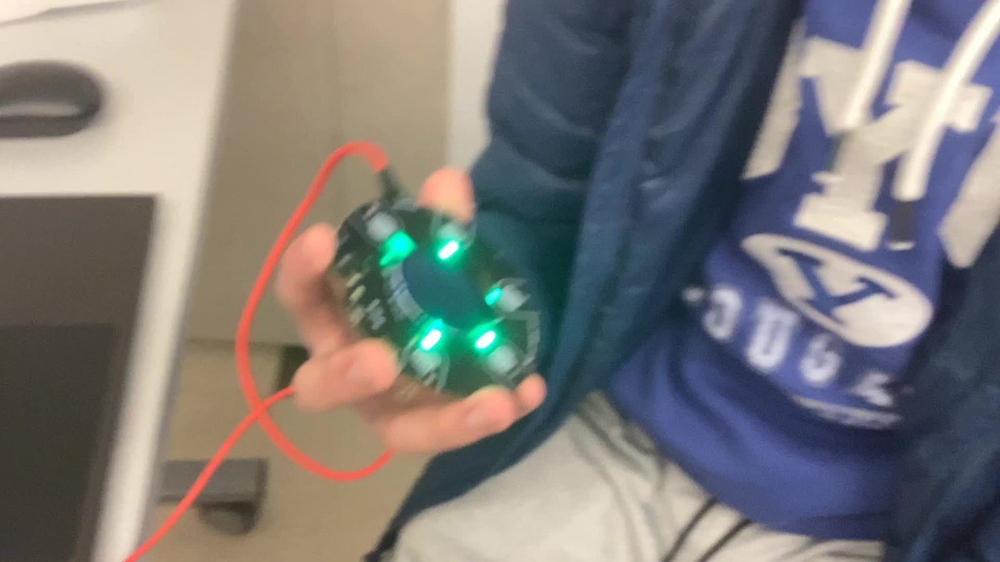

01 / Entertain
A light and sound show you wave at

The idea
A set of scenes that comes alive when someone walks up: lights, sound and moving parts telling a short story, then resetting for the next person.
How it works
I designed the Arduino shield boards in KiCad, with their own 5 V buck board, and built at least three physical scenes. Each shield drives 320 WS2812B LEDs. The firmware steps through a scene state machine (Intro, Launch, Explosion, Movement, Final) and keeps a DFPlayer audio module in sync by pulse count.
What happened
First at TSA States three years running, my last three years of high school, and second at TSA Nationals.